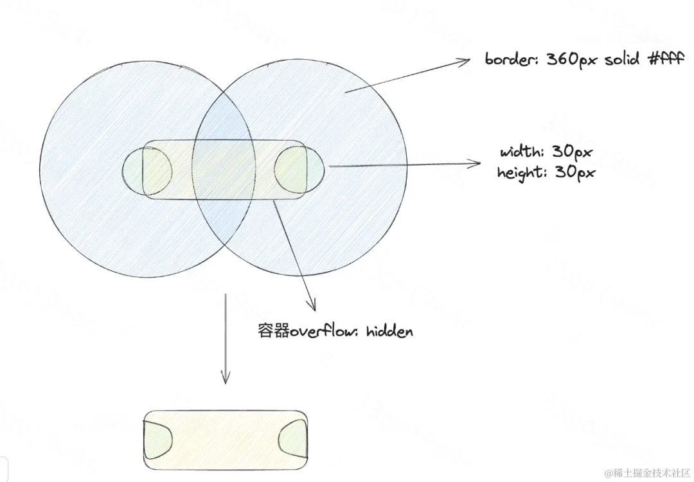

开发 H5 遇到的一些问题
2024-07-18 22:23:12 · YinHao
iOS 圆角不生效
ios 中使用 border-radius 配合 overflow:hidden 出现了失效的情况：
出现此问题的原因是因为 ios 手机会在 transform 的时候导致 border-radius 失效
解决方法：在使用动画效果带 transform 的元素的上一级 div 元素的 css 加上下面语句：
div {
-webkit-transform: rotate(0deg);
}
iOS 文本省略溢出问题
在部分 ios 手机上会出现以下情况：

原因
在目标元素上设置 font-size = line-height，并加上以下单行省略代码：
.text-overflow {
display: -webkit-box;
overflow: hidden;
text-overflow: ellipsis;
word-break: break-all;
-webkit-line-clamp: 1;
-webkit-box-orient: vertical;
}
或者：
.text-overflow {
overflow: hidden;
white-space: nowrap;
text-overflow: ellipsis;
}
由于不同系统包含的字体的行高不一致，即使设置了 height = line-height 一样会有以上问题
解决方案
经过测试，在 height = line-height = font-szie 的情况下，加上 padding-top: 1px 可以解决这个问题，即在需要使用单行省略的地方加上：
.demo {
height: 28px;
line-height: 28px;
font-size: 28px;
padding-top: 1px;
}
如：<div class="text-overflow demo">我是需要进行单行省略的文案</div>
安卓手机按钮点击后有橙色边框

解决方案：
button:focus {
outline: none;
}
优惠券打孔效果
需求中经常需要实现一类效果，优惠券打孔，如下图所示：

通常情况下会找设计采用图片的的形式，但这个方案最大的缺陷是无法适配背景的变化。因此，我们可以采用如下方案，左右两侧各打一个孔，且穿透背景：
具体细节可以参考这篇文章：纯 CSS 实现优惠券透明圆形镂空打孔效果
Clipboard 兼容性问题
navigator.clipboard 兼容性不是很好，低版本浏览器不支持

解决方案：
const copyText = (text: string) => {
return new Promise((resolve) => {
if (navigator.clipboard?.writeText) {
return resolve(navigator.clipboard.writeText(text));
}
// 创建输入框
const textarea = document.createElement("textarea");
document.body.appendChild(textarea);
// 隐藏此输入框
textarea.style.position = "absolute";
textarea.style.clip = "rect(0 0 0 0)";
// 赋值
textarea.value = text;
// 选中
textarea.select();
// 复制
document.execCommand("copy", true);
textarea.remove();
return resolve(true);
});
};
Unocss 打包后样式不生效
这个问题是由 webpack 缓存导致的，在 vue.config.js 中添加以下代码：
config.module.rule("vue").uses.delete("cache-loader");
具体原因见：UnoCSS webpack 插件原理
低端机型 options 请求不过问题
在我们的业务需求中，覆盖的人群很广，涉及到的机型也很多。于是我们发现在部分低端机型下（oppo R11、R9 等），有很多请求只有 options 请求，没有真正的业务请求。导致用户拿不到数据，报 network error 错误，我们的埋点数据也记录到了这一异常。
在我们的这个项目中，我们的后台有两个，一个提供物料，一个提供别的数据。但是奇怪的是，物料后台是可以正常获取数据，但业务后台就不行！
经过仔细对比二者发送的 options 请求，发现了问题所在：

发现二者主要存在以下差异：
Access-Control-Allow-Headers: *
Access-Control-Allow-origin: *
于是我便开始排查两个响应头的兼容性，发现在这些低端机型上，Access-Control-Allow-Headers: * 确实会有问题，这些旧手机无法识别这个通配符，或者直接进行了忽略，导致 options 请求没过，自然就没有后续真正的请求了。

解决方案：由后台枚举前端需要的 headers，在 Access-Control-Allow-Headers 中返回。